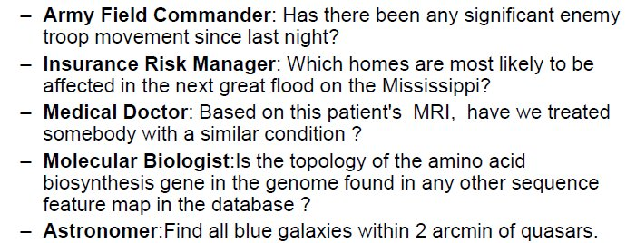
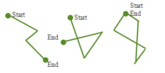
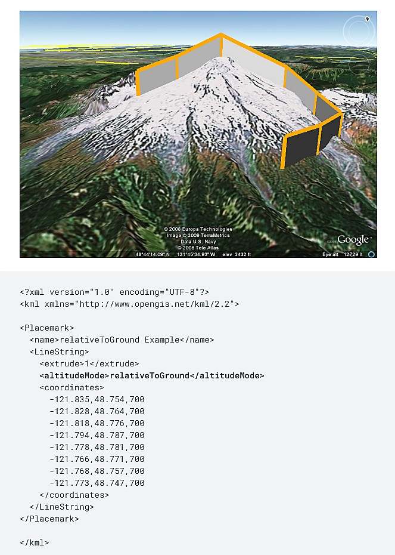

***
←
→
Slides redesign
3 before/after examples
|
#1 - Temporal Contiguity Principle
People learn better when corresponding words and pictures are presented simultaneously rather than successively.
What can be plotted on to a map?
- crime data
- spread of disease, risk of disease [look at this too]
- drug overdoses - over time
- census data
- income distribution, home prices
- locations of Starbucks (!)
- (real-time) traffic
- agricultural land use, deforestation
Who creates/uses spatial data?

Various government agencies routinely coordinate spatial data collection and use, operating in effect, a national spatial data infrastructure (NSDI) - these include federal, state and local agencies. At the federal level, participating agencies include:
- Department of Commerce
- Bureau of the Census
- NIST
- NOAA
- Department of Defense
- Army Corps of Engineers
- Defense Mapping Agency
- Department of the Interior
- Bureau of Land Management
- Fish and Wildlife Service
- U.S Geological Survey
- Department of Agriculture
- Agricultural Stabilization and Conservation Service
- Economic Research Service
- Forest Service
- National Agriculture Statistical Service
- Soil Conservation Service
- Department of Transportation
- Federal Highway Administration
- Environmental Protection Agency
- NASA
As you can see, spatial data is a SERIOUS resource, vital to US' national interests.
What can be plotted on to a map?
- crime data
- spread of disease, risk of disease [look at this too]
- drug overdoses - over time
- census data
- income distribution, home prices
- locations of Starbucks (!)
- (real-time) traffic
- agricultural land use, deforestation
Who creates/uses spatial data?
Various government agencies routinely coordinate spatial data collection and use, operating in effect, a national spatial data infrastructure (NSDI) - these include federal, state and local agencies. At the federal level, participating agencies include:
- Department of Commerce
- Bureau of the Census
- NIST
- NOAA
- Department of Defense
- Army Corps of Engineers
- Defense Mapping Agency
- Department of the Interior
- Bureau of Land Management
- Fish and Wildlife Service
- U.S Geological Survey
- Department of Agriculture
- Agricultural Stabilization and Conservation Service
- Economic Research Service
- Forest Service
- National Agriculture Statistical Service
- Soil Conservation Service
- Department of Transportation
- Federal Highway Administration
- Environmental Protection Agency
- NASA
As you can see, spatial data is a SERIOUS resource, vital to US' national interests.
#2 - Spatial Contiguity Principle
People learn better when corresponding words and pictures are presented near rather than far from each other on the page or screen.
What to store?
All spatial data can be described via the following entities/types:
- points/vertices/nodes
- polylines/arcs/linestrings
- polygons/regions
- pixels/raster




What to store?
All spatial data can be described via the following entities/types:
- points/vertices/nodes
- polylines/arcs/linestrings
- polygons/regions
- pixels/raster
#3 - Multimedia Principle
People learn better from words and pictures than from words alone.
Google KML
Google's KML format is used to encode spatial data for Google Earth, etc. Here is a page on importing other geospatial dataset formats into Google Earth.
Google KML
Google's KML format is used to encode spatial data for Google Earth, etc. Here is a page on importing other geospatial dataset formats into Google Earth.
